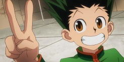
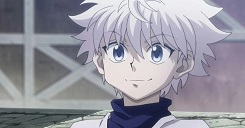
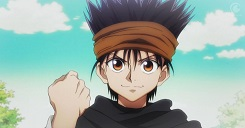

Gon
Gon is one of two main charactors in Hunter X Hunter. Gon is the charactor that is focused on throughout the magority of the show. Gon is the charactor on the left side of the top image. Gon style trought the show does not change but he gets much stronger.
Killoa
Killoa is one of two main charactors in Hunter X Hunter. Killoa is the charactor this is next to Gon the entire show. Killoa is the charactor on the right side of the top image. Unfortuanily Killoa does not change much througout the show, but he does help Gon every couple of episodes.
Ging
Ging is the father of Gon. And the main target of the whole show. Gon's whole goal is to reach his father and he Adventually does. Ging is a very bad father as he abandonded Gon and his mother at the beggining of the show. Almost every charactor besides Gon hates Ging because he never does anything for anyone else.
